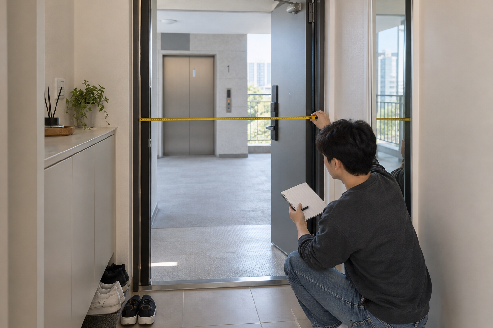
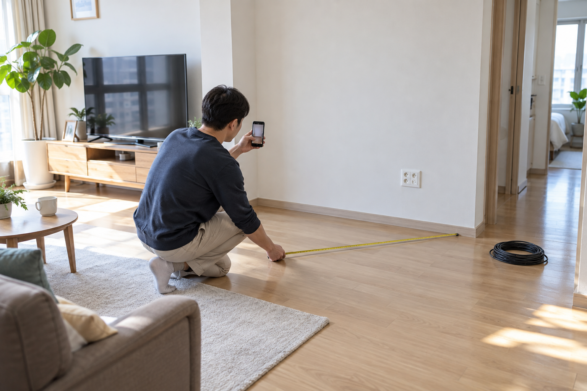

가정용 오락기 배송 전에는 배송 방식과 도착 범위를 확인하고, 현관부터 설치 자리까지의 통로를 측정해 비워 두세요. 설치할 자리와 전원·화면 연결 환경을 정리하고, 수령 직후 외관과 주문 구성을 확인할 순서까지 준비하면 배송 당일의 혼선을 줄일 수 있습니다.
배송 방식과 도착 범위를 먼저 확인하세요
주문한 제품명과 옵션을 기준으로 예정일, 연락 방법, 건물 앞 전달인지 실내 반입인지, 설치가 포함되는지를 판매자에게 확인하세요. 배송 기사 연락을 받을 사람과 수령 장소를 정하고, 공동현관 출입이나 주차 안내가 필요하다면 미리 준비하는 편이 좋습니다.
배송 범위와 설치 포함 여부는 주문한 제품의 안내를 기준으로 미리 확인해야 합니다.
구매 전에 정리할 질문은 오락기 구매 전에 문의할 질문에서도 확인할 수 있습니다.

현관부터 설치 자리까지 통로를 재세요
현관문, 복도, 방문과 엘리베이터의 실제 통과 폭을 재고 문턱, 손잡이, 가구처럼 이동을 방해할 요소를 살펴보세요. 측정할 때는 문을 실제로 연 상태를 기준으로 하고, 배송 당일에는 신발이나 작은 가구를 통로 밖으로 옮겨 두세요.
반입 가능 여부는 가장 좁은 출입구와 꺾이는 구간의 실제 치수로 판단해야 합니다.
설치 자리와 이동 경로를 재는 방법은 가정용 오락기 설치 공간 측정법을 참고하세요.
- 현관문과 방문을 연 상태의 통과 폭
- 엘리베이터 문과 내부 공간
- 복도에서 방향을 바꿀 수 있는 여유
- 계단, 문턱, 손잡이와 이동을 막는 가구

설치 자리와 전원 환경을 비워 두세요
제품을 둘 바닥을 비우고 주변 가구와 벽면 사이에 필요한 여유가 있는지 현재 판매 안내와 문의 답변을 기준으로 확인하세요. 콘센트와 TV 입력 단자의 위치를 살피되, 제품별 연결 방법을 확인하기 전에는 임의로 전원을 연결하거나 연장선을 배치하지 않는 편이 안전합니다.
설치 자리에는 제품뿐 아니라 조작할 사람과 연결선을 위한 공간도 함께 확보해야 합니다.
노리박스 공개 제품 목록에는 스탠드형 제품과 TV 연결형 제품이 각각 안내되어 있어, 배송 전에 준비할 자리와 화면 연결 환경이 제품 형태에 따라 달라질 수 있습니다.
수령 직후 확인할 순서를 정하세요
노리박스 제품 목록에서 주문한 상품명과 옵션을 다시 확인하고, 수령 시 포장 겉면과 제품 외관, 도착한 구성품을 차례로 살펴보세요. 이상이 보이면 임의로 조립하거나 사용하기 전에 주문 정보와 상태가 보이도록 사진을 남기고 판매자에게 문의하세요.
수령 확인은 주문 정보, 외관, 구성품 순서로 기록하면 문의할 내용을 정리하기 쉽습니다.
배송 전에 제품자세히보기에서 주문한 제품의 현재 안내를 확인하고, 반입 경로나 설치 조건이 불분명하면 연락하기에서 미리 문의하세요.